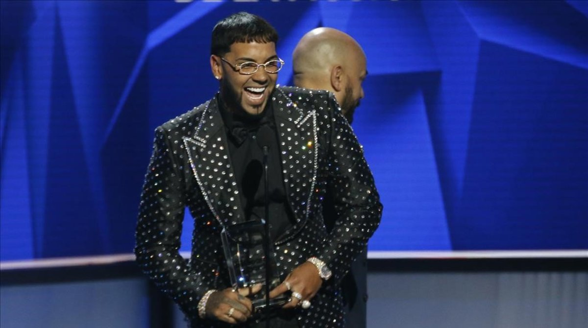
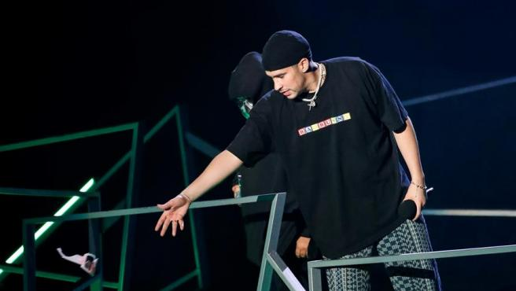
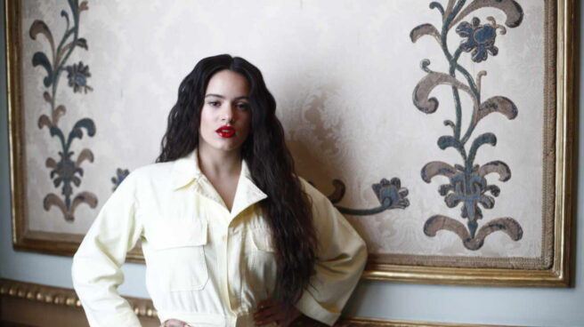

CANTANTES
MENÚ
ACTUALIDAD
SALUD ADOLESCENTE
Anuel AA incendia las redes con su posible retirada y ruptura con Karol G

Bad Bunny anuncia su nuevo disco y juega con la posibilidad de retirarse

¿Hay mensajes ocultos de C. Tangana a Rosalía en su nuevo vídeo?

© Adrián Ruiz Gómez /
<< Página de contacto >>